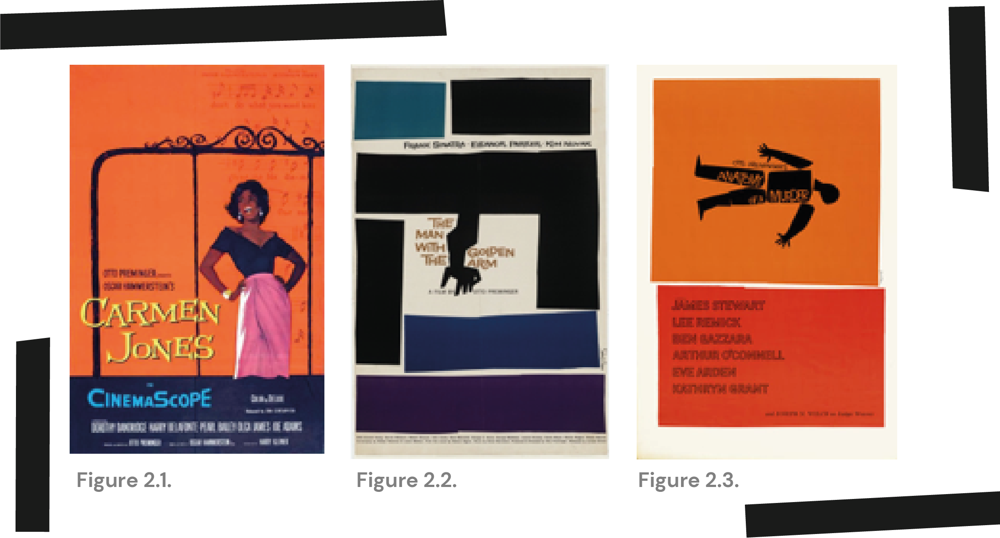
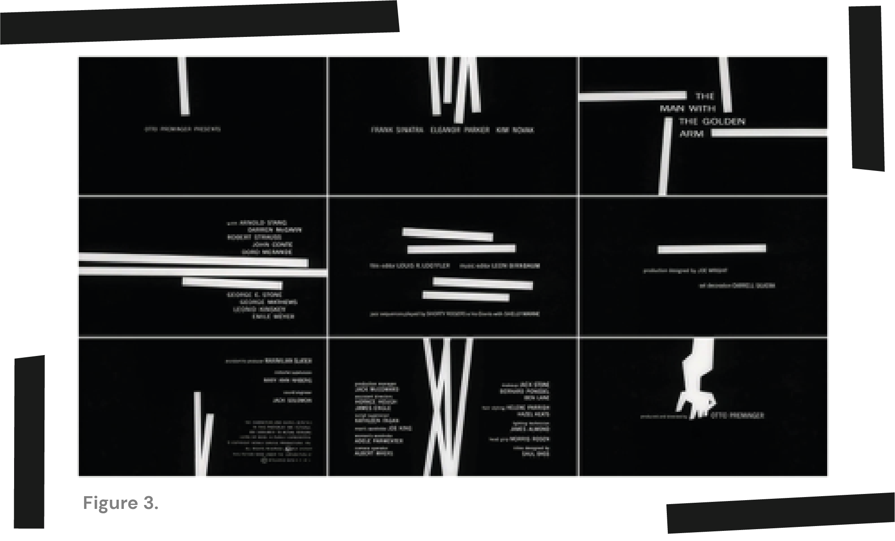

How did
Saul Bass
change the face of movie title sequences?
Introduction
The first movie title sequence was shown during the silent movie era with movie titles remaining largely unchanged until the 1950’s. While it’s been argued by those such as Deborah Allison, that gradual changes in title design occurred up until this point (Horak, 2014), it is undeniable that at this time the work of Saul Bass would change the face of the movie title forever.
Saul Bass was a graphic designer and film maker best known for his corporate logos, film posters and movie title sequences. Born in Bronx, New York in 1920 Bass went on to study at the Art Students League before moving to Los Angeles to pursue a career in graphic design and commercial art. This led to a very successful 40-year career working for a number of Hollywood’s greatest film makers including Otto Preminger, Alfred Hitchcock and Martin Scorsese to name only a few and it all began with advertising (Saul Bass, n.d.).
Advertising
The film industry has grown massively over the last century. From 1910 the western world saw billions of cinema tickets being sold each year (Whaples, 2008), with the box office revenue in North America alone sitting at 11.32 billion U.S dollars in 2019 (Watson, 2020). Therefore, it’s surprising that even while the film industries launch coincided with the “age of advertising” the industries advertising was originally confined to film company names and movie genres (Horak, 2014). However, from 1910 up until the 1930s the advertising of films progressed to include posters and newspaper advertisements featuring crafted portraits of the stars and hand lettered typography. From there posters and advertisements became filled with photographs, text and artwork with every inch of the advertisement being filled with content (Horak, 2014). Below are examples of a poster and newspaper advertisement for Robert Wise’s ‘So Big’ and Ted Tetziaff’s The White Tower. Both were advertised in the 1950’s and in keeping with the common style of that time appear to display as much of the film plot as possible through images and text covering the entire layout.
 ‘So Big’, 1932 and The White Tower, 1950
‘So Big’, 1932 and The White Tower, 1950Saul Bass refers to this hard sell method of advertising as the “see, see, see” approach (Haskin and Bass, 1996). Which he explains as a number of scenes from the film being displayed on a film poster with the hope that if the first image didn’t appeal to the viewer they could then see another image that might peek their interest and so on. This is still common today and can be seen in user interfaces such as the Amazon homepage however Bass was not a fan of this approach rather his goal was to produce advertising campaigns that were themselves a work of art (Horak, 2014). While Bass produces various poster and advertisements that would have been innkeeping with the common approach of the time he also produced ad’s that were clean and modern however this was usually for studios and directors rather than individual films.
 Carmon Jones, 1954, The Man with the Golden Arm, 1955 and Anatomy of Murder, 1959Bass’ made his break in advertising and launched into movies opening sequences following his work for Otto Preminger’s Carmen Jones which lead to 11 further titles Bass produced with Preminger including The Man with the Golden Arm and Anatomy of a Murder. As can be seen in Bass’ film advertisements above his style was modern and minimalist generally attempting to present an entire film in one image which was a very daring at that time. However, the success of these advertisements, particularly The Man with the Golden Arm was so great that generally the illustrations included in the ads would feature in the opening title.

The Title Sequence
Before Saul Bass transformed movie title sequences into an informative and integral part of the film, movies titles were generally used as “popcorn time” (Re, 2016), an unimportant feature that was used for chit chat and bathroom breaks. This was not the case for Saul Bass’ titles as aptly put by film director Martin Scorsese:
“His titles are not simply unimaginative ‘identification tags’— as in many films— rather, they are integral to the film as a whole. When his work comes up on the screen, the movie itself truly begins.” Martin Scorsese (Haskin and Bass, 1996)
Bass went beyond the static production common to post Word War 2 title sequences, including movement and well-timed audio to produce modernist designs not only changing the face of movie titles sequences but also the way they were perceived by the audience. When Saul Bass designed a film’s opening title the film began with the first frame. This started with a flickering flame behind an illustrated rose, recognisable as the opening sequence to Carmon Jones and became renowned following the title sequence for The Man with the Golden Arm.
 Rose illustration taken from Carmon Jones title sequence
Rose illustration taken from Carmon Jones title sequenceThe title sequence for The Man with the Golden Arm sprung from Preminger’s consent to Bass’ unified approach to the film’s ad campaign (Bass and Kirkham, 2011). Bass describes presenting the illustrated arm used in the campaign as a “general and reductive point of view”, said to be a metaphor for the “disjointed, schizophrenic life of the addict” (Haskin and Bass, 1996). Following the campaigns success both Preminger and Bass felt that beginning the film with the same image would set the perfect tone. The resulting opening title sequence had a massive impact on designers at that time and many since with those such as Charlie Watts, graphic designer and Rolling Stones drummer who explains himself and others he worked with as “aspiring to that beautiful simplification” (Bass and Kirkham, 2011).
 Opening Title Sequence to The Man with the Golden Arm, 1955This incredibly compelling title sequence (stills shown above) was created by Bass with the intent of creating a mood with a “driving intensity” that would convey the “disconnectedness of the addict’s life”. This was very much achieved in the jagged use of white bars moving in and out of the frame creating abstract patterns and leading to the final visual of the arm and timed perfectly to the beat of Elmer Bernstein’s jazz score.

Setting the Scene
From there Bass began to experiment more with movie title sequences dealing with the time before the film is set seen in Bass’ sequences for films such as The Big Country, The Victors and The Grand Prix. In the title sequence for The Big Country Bass presents a number of shots showing the three-month period leading up to where the story begins. These included extremely long and close up shots of the Coach making its way from the East Coast to the West and are very effective in displaying the effort of the horse by close up shots of their hooves and legs running at a fast pace and long shots displaying the marginal movement of the coach across the long span (Haskin and Bass, 1996).
Opening Title Sequence to The Big Country, 1958In The Victors we see a montage of life in Germany in the 25 Years Prior to the stories beginning, with final clips showing Hitler dancing in victory following the defeat of France. While in the sequence for the Gran Prix the audience only see’s the moments before a Monte Carlo race, used to display the building tension and final technical checks that take place before a race (Haskin and Bass, 1996). I find this approach to be an excellent use of the title sequence time and a brilliant way to help the audience engage with the story as it provides context for what they are about to see giving them a clearer understanding of the importance of the movie title sequence as an integral component of the film if not yet as put by Bass himself the movie “proper”.
Title Sequences Now
The impact of this new approach in the title sequence setting the mood and applying context has not only taken over movie title sequences but also television title sequences with current series such as Game of Throne and The Walking Dead using title sequences to set the scene by introducing the viewer to the landscape of the setting through an animated map as seen in Game of Thrones and post-apocalyptic homes and streets as seen in The Walking Dead season 1. Valentina Re describes this as using the title sequence to add “paratextual” value to the film or series (Re, 2016).
 Frames taken form Catch Me If You Can, 2002 and Kiss Kiss Bang Bang, 2005 title sequences
Frames taken form Catch Me If You Can, 2002 and Kiss Kiss Bang Bang, 2005 title sequencesFurthermore, Bass’ unique illustrative approach to the title sequence can still be seen in movie opening sequences today in films such as Steven Spielberg’s Catch Me if You Can and Shane Black's Kiss Kiss Bang Bang. Both feature silhouetted figures common to Bass’ style and the clever combination of visual and audio timing to produce engaging modernist outcomes. In fact, Oliver Kuntzel and Florence Deygas, designers of the Catch Me if You Can sequence were briefed by Spielberg to create a Saul Bass inspired outcome. In my opinion Kunzel and Deygas did not disappoint in their homage to Bass’ work with notable features referencing titles such as the 1960 Ocean’s 11 and Anatomy of Murder.

Conclusion
Throughout Bass’ career he also achieved many other feats including winning an Academy Award for Best Documentary for his short film, Why Man Creates and the Lion of San Marco for Best Film about Adolescence for The Searching Eye and was even involved in producing iconic scenes such as Psycho’s shower scene. I believe that it fair to say that throughout his career Saul Bass has become renowned for his input into film but most pointedly his role in the evolution of the title sequence without which we may not know title sequences as we do today. Beyond these outstanding achievements Bass has also had huge impact in graphic design and the modernist movement through his application of clean modern design in advertising and filmography.

Bibliography
- Annyas, C. (n.d.). Anatomy of Murder, 1959. [image] Available at: [Accessed 24 November 2020].
- Art of the Title. (n.d.). Frame from Catch Me If You Can Title Sequence, 2002.. [image] Available at: [Accessed 1 December 2020].
- Art of the Title. (n.d.). Opening Title Sequence to The Big Country, 1958. [image] Available at: [Accessed 24 November 2020].
- Art of the Title. (n.d.). Opening Title Sequence to The Man with The Golden Arm, 1955. [image] Available at: [Accessed 24 November 2020].
- Art of the title. (n.d.) Saul Bass. [online] Available at: [Accessed 15 November 2020].
- Bass, J. and Kirkham, P. (2011) Saul Bass. A Life in Film and Design. London: Laurence King, pp.105-137.
- Guardiola, E. (2018). 'So Big', 1932. [image] Available at: [Accessed 24 November 2020].
- Famous Graphic Designers. (n.d.) Saul Bass— Biography, Designs and Facts. [online] Available at: [Accessed 14 November 2020].
- Haskin, P. and Bass, S. (1996) "Saul, Can You Make Me A Tiltle?": Interview with Saul Bass. [ebook] University of California Press. Available at: [Accessed 15 November 2020].
- Horak, J. (2014) Saul Bass: Anatomy of Film Design. University Press of Kentucky.
- MoMA. (n.d.). The Man with the Golden Arm, 1955. [image] Available at: [Accessed 24 November 2020].
- Re, V. (2016) From Saul Bass to participatory culture: Opening title sequences in contemporary television series. [online] Available at: [Accessed 15 November 2020].
- Sosbe, C. (2017) Kiss Kiss Bang Bang— GD 203. [online] Go.distance.ncsu.edu. Available at: [Accessed 24 November 2020].
- Thomas, L. (2017) 10 Inspired Opening Credits Sequences Of The 21St Century. [online] British Film Institute. Available at: [Accessed 24 November 2020].
- Vintage Ad Browser. (n.d.). The White Tower, 1950. [image] Available at: [Accessed 24 November 2020].
- Webb, P. (2012). Carmon Jones, 1954. [image] Available at: [Accessed 24 November 2020].
- Whaples, R. (2008) The Economic History of The International Film Industry. [online] Eh.net. Available at: [Accessed 15 November 2020]. Yount, D. (2010). Frame from Kiss Kiss Bang Bang Title Sequence, 2005. [image] Available at: [Accessed 1 December 2020].